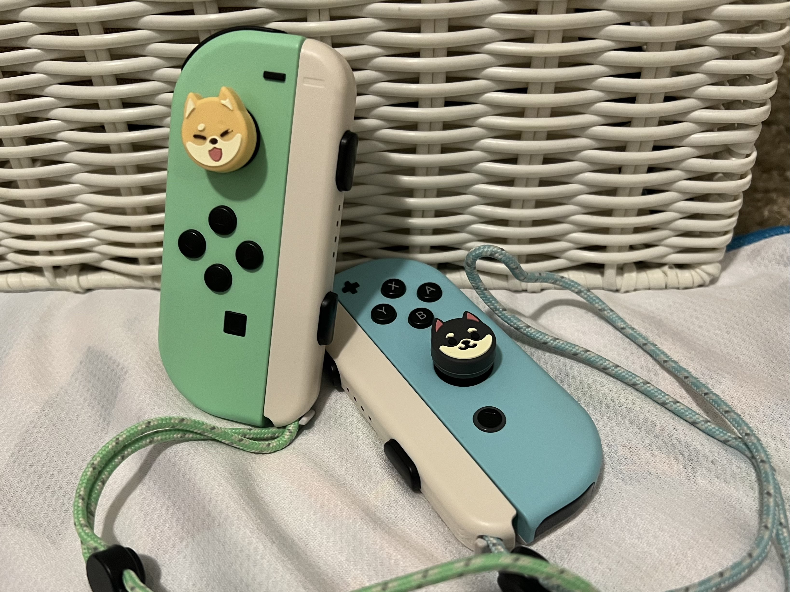

My (Expensive Ass) Controller Collection
Vaguely, I've tried to order this list from most to least treasured, but they're all very important to me as pieces of my collection LOL. Click any image to view the store link (except for the Joy-cons, the cat controller, and the controller at the bottom - I cannot for the life of me find the original listing for the latter two). I'm not sponsored by any of these guys, I just like spreading the love of a horrifically pricey hobby.
YES, I did a whole photoshoot for my controllers. What's it to you.
THE RAICELI CONTROLLER... This baby is so everything. I got it commissioned, it's so beautiful. The paint does have an awkward matte texture (especially compared to the nice grip of the base Pro Controller), but it's not too bad.
The Nintendo Switch Pro Controller is so suprisingly reliable... I love the weight distribution and button feel on this thing, so fun to play with. Also, it's kinda durable? I've dropped this thing a lot and it hasn't really seen any damage.
This was my first "expensive" controller lols. I use it a lot for PC gaming, since they have analog triggers (which feel so juicy, but aren't really in Nintendo Switch games).

I use these to play Tetris 99. They do their one, single job very well. (I also have Joy-cons in red/blue, yellow, gray, and pink/green, but they're with my brother right now). I've had to repair these twice for drift, so that's funny.
This was the first controller I bought that I actually put a lot of use into myself. It was just really solid - I used it for everything. Nowadays it's sorta "middle of the line" in terms of quality.
I got this while I was at the mall with my girlfriend during our first meetup. I love it, I'm even willing to forgive the lack of rumble support, but the charger port is positioned in a sort of tunnel, so it's hard to find a charger that can fit. Here's a gif of the controller cycling colors.
I got this PowerA as a holiday gift some years back. I hardly use it because I hate how the wireless PowerA controllers don't have any rumble. It's a lovely design and I love the "vintage" look of it.
The "cat" controller was supposed to be designed for people with smaller hands, so I thought I'd give it a try. I can confidently say it is very fucking small.
I liked the weird design, but it just felt weird to play. I think it's too light/clicky for me, though I know some people are SUPER into that feel.
I think this was my first pro-styled controller. It was really cheap, and I just wanted to get it so my brother could play Minecraft on the Nintendo Switch with me (even though we could already play together on PC).